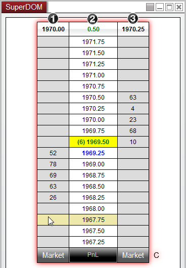

|
<< Click to Display Table of Contents >> Static vs Dynamic Price Ladder Display |


|
Static vs Dynamic Price Ladder Display
|
<< Click to Display Table of Contents >> Static vs Dynamic Price Ladder Display |
|
You may have the option of using either a static (original SuperDOM) or dynamic price ladder display depending on your FCM or broker. The difference between these options is how the inside market is displayed in the Price Ladder.
 Understanding the Static Price Ladder display
Understanding the Static Price Ladder display
StaticThe inside market (ask/bid and last price) climb up and down the Price Ladder in response to a change in market price.
The price rows are static (do not change). |
 Understanding the Dynamic Price Ladder display
Understanding the Dynamic Price Ladder display
DynamicThe inside market (ask/bid and last price) is in a fixed location in the Price Ladder display.
The price rows are dynamic in that each row's price changes in response to a change in market price. |
Suspending the Dynamic Price LadderTo assist with submitting and modifying orders in the Dynamic Price Ladder display during volatile market activity you can choose to suspend (freeze) the Price Ladder display simply by moving your mouse cursor over the Price Ladder.
Once suspended, the ladder will highlight red in color and you can now safely submit or modify an order without the price of the underlying row changing. In addition, the inside market will be displayed in the top row of the SuperDOM while the price ladder is frozen.
In the image below, we can easily tell that the Price Ladder has been has been suspended as the ladder has been highlighted in red. We can also identify the following information displayed in the top row:
1.Best bid 2.Net change (last traded price) from the time the display was suspended 3.Best ask

The Price Ladder will remain suspended until you remove your cursor from the price ladder display, at which point all rows will begin updating dynamically once again. |